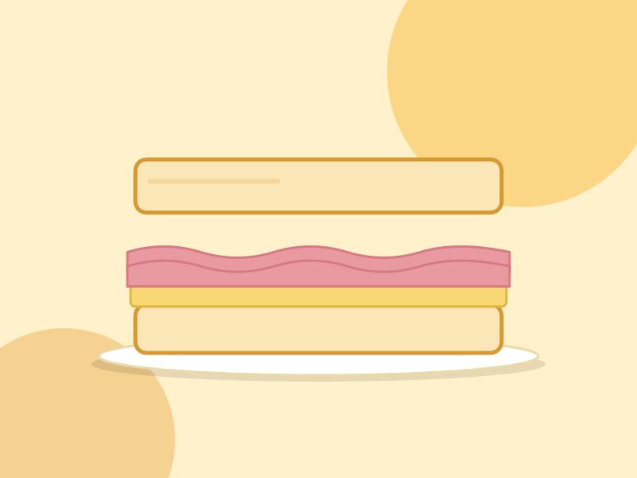
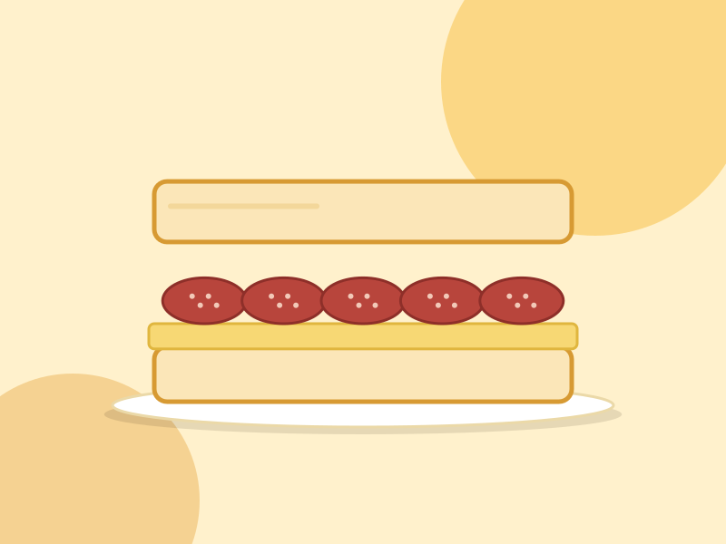

Sanguches de jamón y queso
Sanguches caseros de jamón y queso, simples y ricos, para la merienda o para una reunión.
- Jamón
- Queso
- Pan fresco

Sanguches caseros de jamón y queso, simples y ricos, para la merienda o para una reunión.

Sanguches caseros de salame y queso, con mucho sabor, para picar o para acompañar una tarta.
Contanos qué querés y lo preparamos para vos. Pedir es muy fácil.
Hacer un pedido